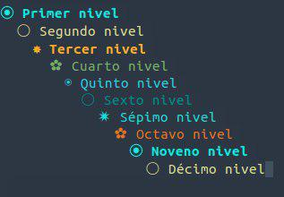

32 Bullets
Los bullets son viñetas configurables.
Para activar los bullets a mano:
M-x org-bullets-mode
Para arrancar este modo tendremos que escribir en el archivo de configuración de Emacs, .emacs esta línea:
(setq 'org-bullets-mode)

Fuente